Conserva aí
Que planta é essa?
Bem-vindo à comemoração do Dia da Árvore!
Aqui você vai encontrar as principais informações sobre a flora da Praça Santos Dumont e desenhos que serão feitos ao longo do dia nessa celebração.
Você consegue encontrar essas plantas?
São quatro famílias principais que tem aqui na praça!
Quando você as encontrar, não esqueca de registrar! Pode ser por foto, vídeo ou desenho!
1.
Família
Arecaceae
Nome científico
Syagrus romanzoffiana
(Cham.) Glassman
Sinonímias botânicas:
Arecastrum romanzoffianum (Cham.) Becc. var. romanzoffianum, Cocos romanzoffiana Cham., Arecastrum romanzoffianum var. australe (Mart.) Becc., Arecastrum romanzoffianum var. ensifolium (Drude) Becc., Arecastrum romanzoffianum var. genuinum Becc., Arecastrum romanzoffianum var. micropindo Becc., Calappa acrocomioides (Drude) Kuntze, Calappa australis (Mart.) Kuntze, Calappa datil (Drude & Griseb.) Kuntze, Calappa martiana (Drude & Glaz.) Kuntze, Calappa plumosa (Hook.f.) Kuntze, Cocos acrocomioides Drude, Cocos arechavaletana Barb.Rodr., Cocos australis Drude & Brandt, Cocos australis Mart., Cocos botryophora var. ensifolia Drude, Cocos datil Drude & Griseb., Cocos geriba Barb.Rodr., Cocos martiana Drude & Glaz., Cocos plumosa Lodd. ex Hook., Cocos romanzoffiana var. plumosa (Lodd. ex Hook.) A. Berger, Arecastrum romanzoffianum (Cham.) Becc., Calappa romanzoffiana (Cham.) Kuntze
Nome vernacular
Jerivá
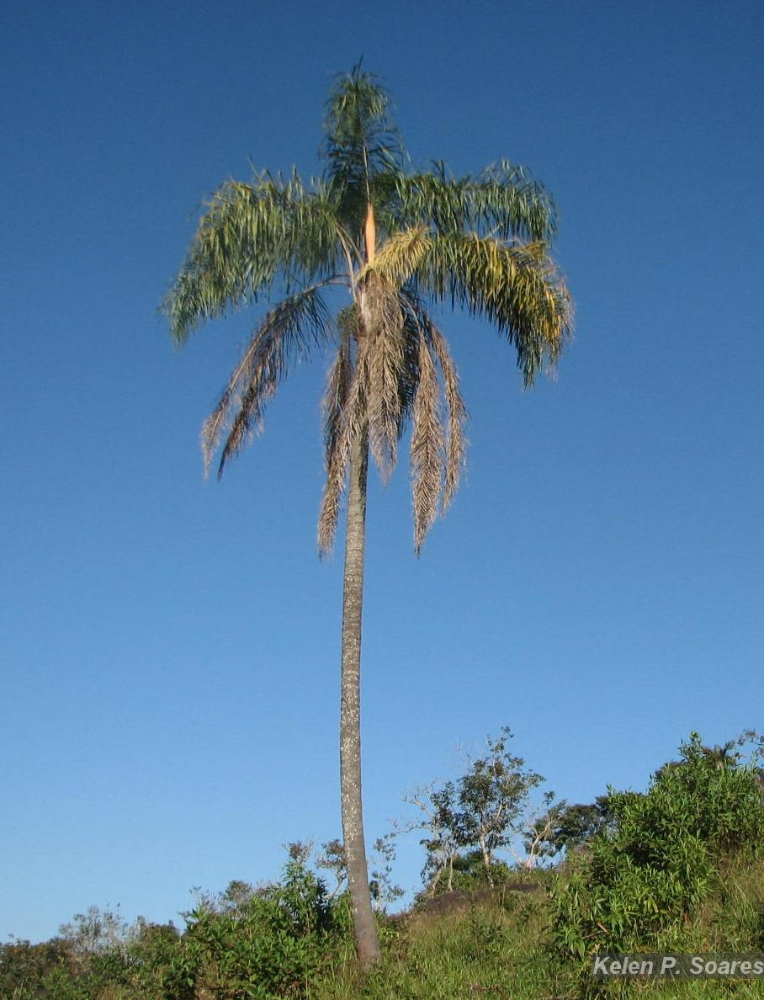
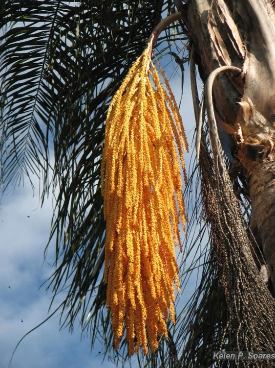
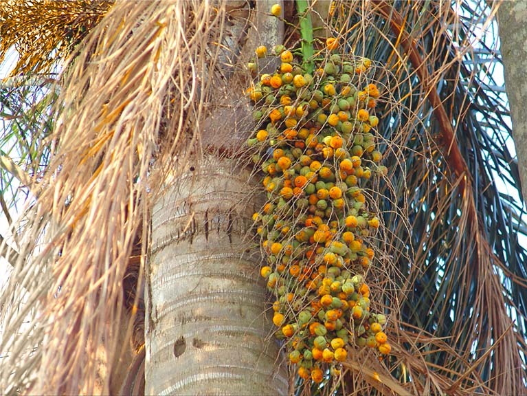
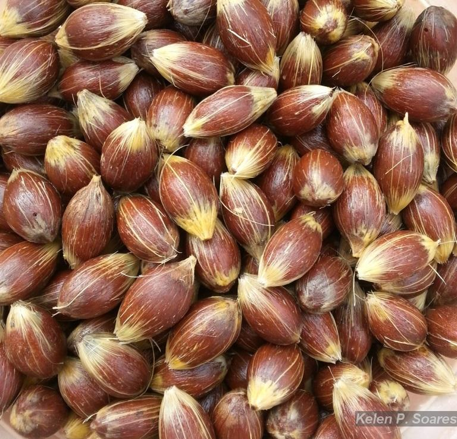
Grau de ameaça
LC (pouco preocupante)
Origem
Nativa
Endemismo
Não é endêmica do Brasil
Distribuição geográfica
Nordeste (Bahia), Centro-Oeste (Distrito Federal, Goiás, Mato Grosso do Sul), Sudeste (Espírito Santo, Minas Gerais, Rio de Janeiro, São Paulo), Sul (Paraná, Rio Grande do Sul, Santa Catarina)
Domínios Fitogeográficos
Cerrado, Mata Atlântica, Pampa (Área Antrópica, Campo de Altitude, Campo de Várzea, Campo Rupestre, Floresta Ciliar ou Galeria, Floresta Estacional Decidual, Floresta Estacional Perenifólia, Floresta Estacional Semidecidual, Floresta Ombrófila, Floresta Ombrófila Mista, Vegetação Sobre Afloramentos Rochosos)
Fenologia
Palmeira, podendo atingir até 30 metros de altura. Floresce quase o ano inteiro. Os frutos são encontrados maduros durante todo o ano
Polinização
Essencialmente abelhas (de todas as espécies)
Dispersão frutos/sementes
Essencialmente Zoocórica
Usos
Madeira: seu tronco duro e fibroso tem diversos usos. É utilizado como postes, cercas, caibros e ripas de paióis provisórios, material de cobertura na construção de casas rústicas e como material de artesanato;
Energia: suas folhas são resistentes e utilizadas como material combustível;
Alimentação animal: forragem apreciada pelos equinos;
Alimentação humana: o fruto fornece polpa adocicada e comestível e o palmito é muito apreciado em algumas regiões do Brasil;
Apícola: as flores do jerivá são melíferas e de grande potencial apícola, produzindo pólen e néctar;
Medicinal: a casca auxilina em problemas renais e estomacais;
Paisagístico: amplamente utilizada em projetos paisagísticos, sendo empregado na arborização urbana, de praças e jardins
Referências
Flora e Funga do Brasil (2022) e Carvalho (2003)
______________________________________________________________________________
2.
Família
Bignoniaceae
Nome científico
Handroanthus heptaphyllus
(Vell.) Mattos
Sinonímias botânicas:
Bignonia heptaphylla Vell., Handroanthus avellanedae var. paullensis (Toledo) Mattos, Handroanthus eximius (Miq.) Mattos, Handroanthus impetiginosus var. lepidota (Bureau) Mattos, Tabebuia avellanedae var. paulensis Toledo, Tabebuia eximia (Miq.) Sandwith, Tabebuia heptaphylla (Vell.) Toledo, Tabebuia impetiginosa var. lepidota (Bureau) Toledo, Tabebuia ipe (Mart. ex K.Schum.) Standl., Tecoma curialis Saldanha, Tecoma eximia Miq., Tecoma impertiginosa var. lepidota Mart., Tecoma impetiginosa var. lepidota Bureau, Tecoma ipe Mart. ex K.Schum., Tecoma ipe var. desinens Sprague
Nome vernacular
Ipê-rosa
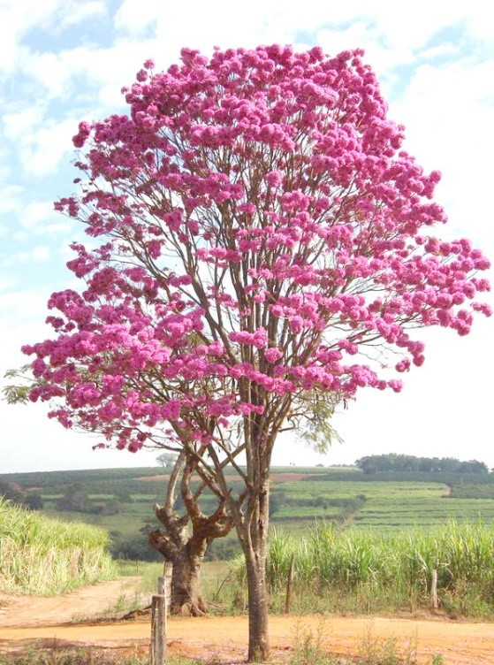
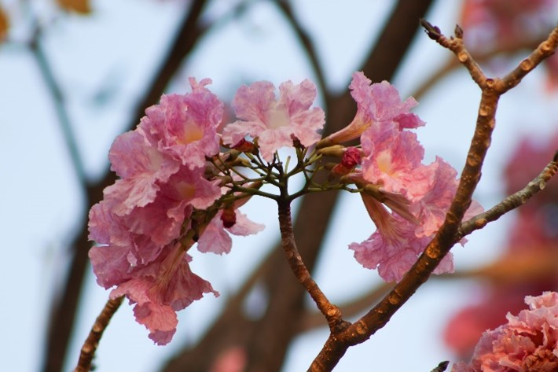
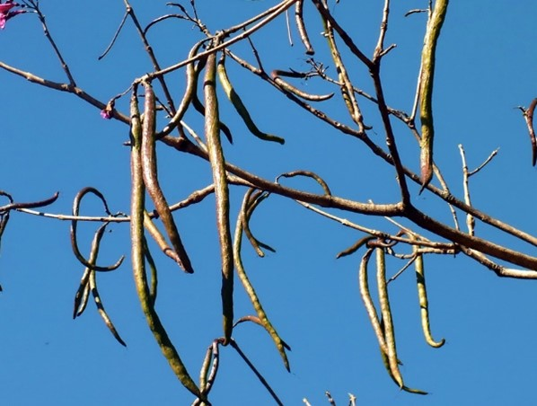
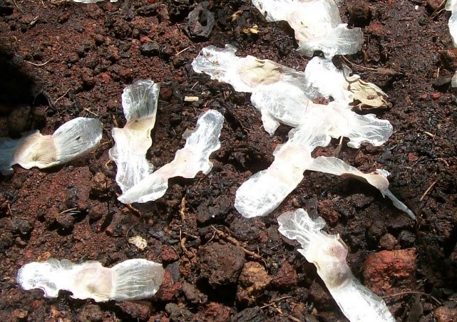
Grau de ameaça
LC (pouco preocupante)
Origem
Nativa
Endemismo
Não é endêmica do Brasil
Distribuição geográfica
Nordeste (Bahia, Ceará, Pernambuco), Centro-Oeste (Mato Grosso do Sul, Mato Grosso), Sudeste (Espírito Santo, Minas Gerais, Rio de Janeiro, São Paulo), Sul (Paraná, Rio Grande do Sul, Santa Catarina)
Domínios Fitogeográficos
Cerrado, Mata Atlântica, Pampa (Floresta Estacional Semidecidual, Floresta Ombrófila)
Fenologia
Árvore caducifólia, floração de junho a setembro nos estados do Rio de Janeiro e São Paulo
Polinização
Principalmente abelhas, em especial pela abelha-mamangava
Dispersão frutos/sementes
Anemocórica, pelo vento
Usos
Madeira: densa, de alta durabilidade e resistente ao ataque de cupins, e difícil de ser trabalhada, que pode ser utilizada na construção civil e naval, carpintaria, marcenaria, e na confecção de dormentes, mourões, parquetes, pontes etc;
Energia: produz lenha de boa qualidade e é empregada para a produção de carvão;
Tintorial: extrai-se da casca corante, que pode ser usado para tingir algodão e seda;
Alimentação animal: empregada para forragem;
Paisagístico: espécie amplamente utilizada para arborização urbana, de jardins e praças públicas.
Referências
Flora e Funga do Brasil (2022) e Carvalho (2003)
______________________________________________________________________________
3.
Família
Fabaceae
Nome científico
Paubrasilia echinata
(Lam.) Gagnon, H.C.Lima & G.P.Lewis
Sinonímias botânicas:
Caesalpinia echinata Lam., Caesalpinia obliqua Vogel, Caesalpinia vesicaria Vell., Guilandina echinata (Lam.) Spreng.
Nome vernacular
Pau-brasil
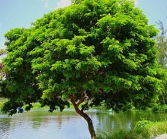
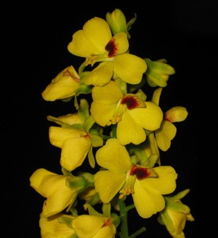
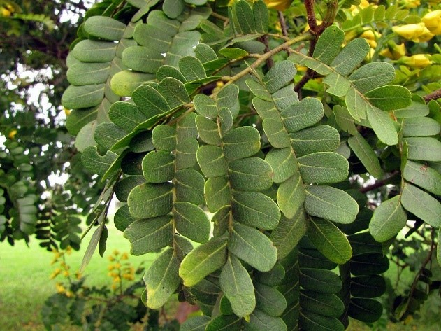
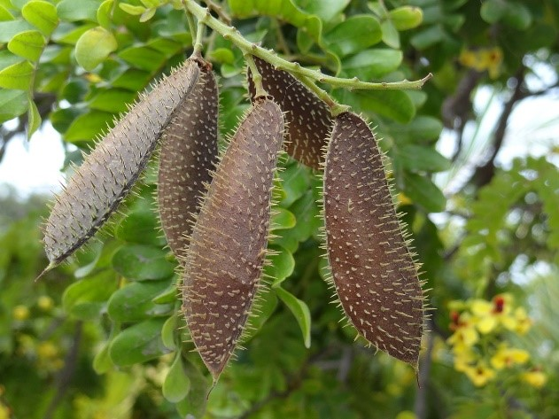
Grau de ameaça
EN (ameaçada de extinção)
Origem
Nativa
Endemismo
É endêmica do Brasil
Distribuição geográfica
Nordeste (Alagoas, Bahia, Paraíba, Pernambuco, Rio Grande do Norte, Sergipe), Sudeste (Espírito Santo, Rio de Janeiro)
Domínios Fitogeográficos
Mata Atlântica (Floresta Estacional Semidecidual, Floresta Ombrófila, Restinga)
Fenologia
Árvore perenifólia, floração de setembro a novembro no estado do Rio de Janeiro
Polinização
Principalmente abelhas e diversos insetos pequenos
Dispersão frutos/sementes
Autocórica, principalmente barocórica, apresentando deiscência explosiva
Usos
Madeira: densa, muito resistente a fungos e considerada incorruptível, podendo ser utilizada na construção civil e na carpintaria. Cabe destacar ainda que é muito usada na fabricação de instrumentos musicais, principalmente na confecção de arco de violino;
Energia: proporciona lenha de boa qualidade;
Tintorial: produz tintura, denominada brasil ou brasileto, que possui cor de vinho;
Medicinal: casca adstringente, corroborante e secante, odontálgico e tônico;
Paisagístico: espécie ornamental recomendada para arborização urbana e em paisagismo de jardins, parques e praças.
Referências
Flora e Funga do Brasil (2022) e Carvalho (2003)
______________________________________________________________________________
4.
Família
Lecythidaceae
Nome científico
Cariniana legalis
(Mart.) Kuntze
Sinonímias botânicas:
Couratari legalis Mart., Cariniana brasiliensis Casar.
Nomes vernaculares
Jequitibá, Jequitibá-rosa
Grau de ameaça
EN (ameaçada de extinção)
Origem
Nativa
Endemismo
É endêmica do Brasil
Distribuição geográfica
Nordeste (Bahia, Paraíba, Pernambuco), Sudeste (Espírito Santo, Minas Gerais, Rio de Janeiro, São Paulo), Sul (Paraná)
Domínios Fitogeográficos
Mata Atlântica (Área Antrópica, Floresta Ombrófila)
Fenologia
Árvore semicaducifólia, floração de abril a maio no estado do Rio de Janeiro
Polinização
Principalmente abelhas
Dispersão frutos/sementes
Autocórica, principalmente barocórica, por gravidade, e anemocórica, pelo vento
Usos
Madeira: moderadamente densa, podendo ser utilizada na construção civil, na carpintaria e na fabricação de utensílios, por exemplo: artigos escolares, brinquedos, cabos de vassouras, caixotaria, fósforos e tonéis;
Frutos: quando vazio pode ser utilizado como um cachimbo rústico ("pito");
Medicinal: a casca é adstringente;
Paisagístico: espécie recomendada para arborização de praças públicas e jardins.
Referências
Flora e Funga do Brasil (2022) e Carvalho (2003)